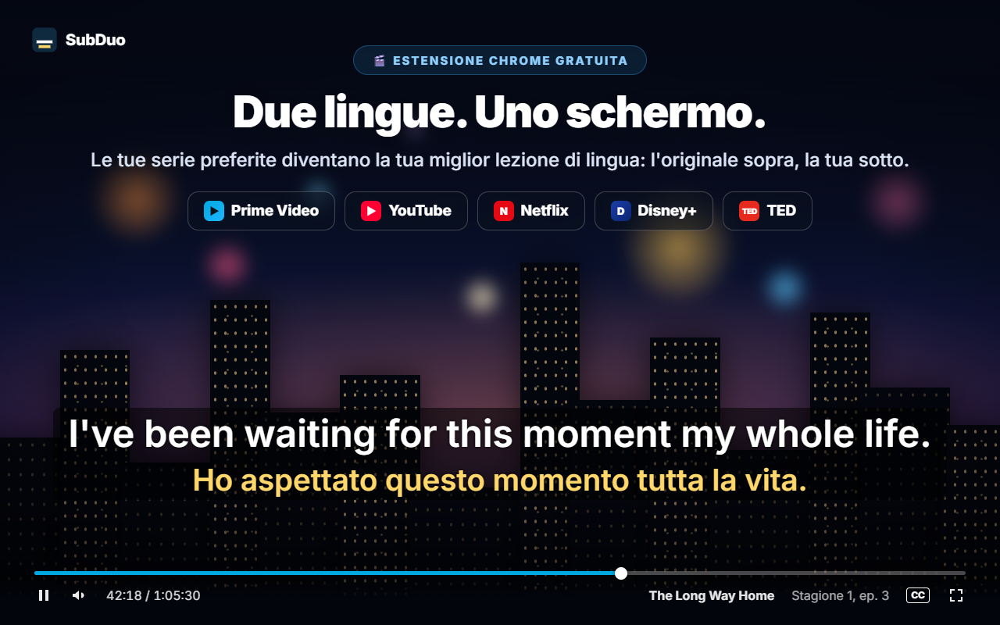
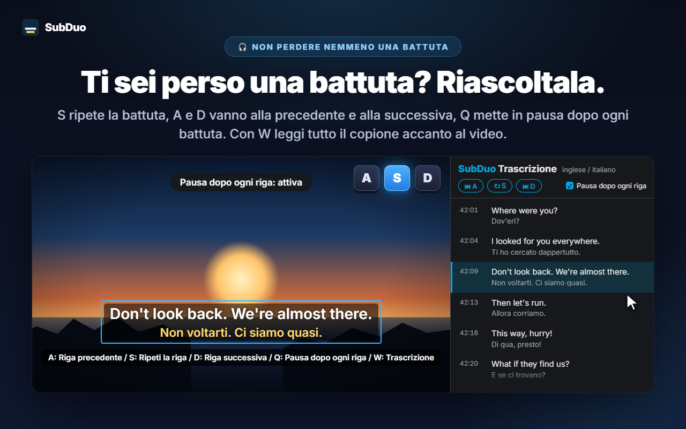
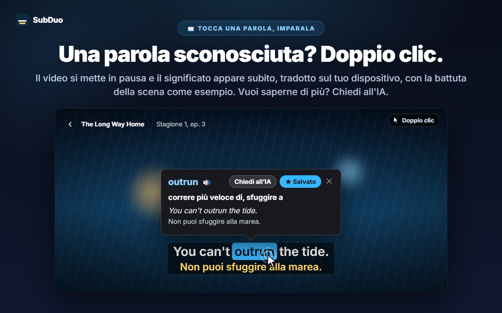
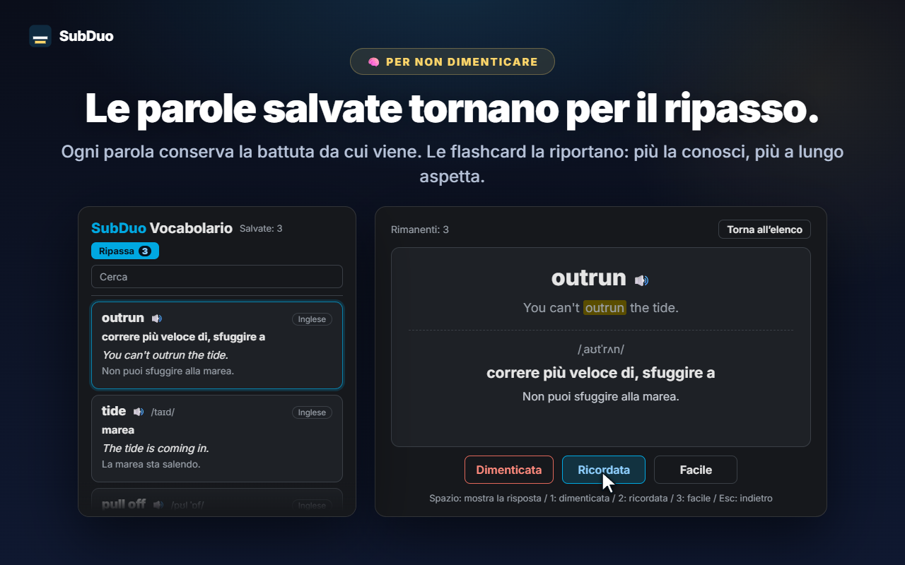

Due lingue di sottotitoli qualsiasi
Ogni traccia offerta dal sito viene rilevata all'avvio del video, compresi i sottotitoli automatici di YouTube. Scegline una per riga, oppure nascondi una delle due.
SubDuo mostra due lingue di sottotitoli insieme: l'originale sopra, la tua sotto. Fai doppio clic su una parola per scoprirne il significato, riascolta una riga con un solo tasto e conserva ciò che impari in un vocabolario integrato.
Usa i sottotitoli già offerti da ogni sito · Nessun account · I sottotitoli restano nel tuo browser
I player in streaming mostrano una sola lingua di sottotitoli alla volta. SubDuo ne aggiunge una seconda, con gli strumenti per imparare da essa.
Schermate dell'estensione, mostrate nella tua lingua.

Scegli due delle tracce di sottotitoli offerte dal titolo: l'originale sopra, la tua sotto. Trascina i sottotitoli dove vuoi, usa la rotellina su una riga per ridimensionarla e fai clic destro per cambiare colori, trasparenza o sfocatura.

Premi S per ripetere la riga, A e D per andare indietro e avanti, e Q per mettere in pausa automaticamente dopo ogni riga. Premi W per aprire la trascrizione nel pannello laterale di Chrome — entrambe le lingue, riga per riga — e fai clic su una voce qualsiasi per saltarci.

Il video si mette in pausa e una scheda mostra subito il significato, tradotto sul tuo dispositivo dal traduttore integrato di Chrome, con la battuta stessa della scena come esempio. Alt+trascina seleziona un'espressione. Tocca «Chiedi all’IA» per il significato nel contesto, la pronuncia e una frase d'esempio.

Ogni parola salvata conserva la battuta da cui proviene. Cerca e filtra il tuo vocabolario, ascolta la pronuncia e ripassa con le flashcard: più conosci una parola, più tempo passa prima che torni.
Nessun account, nessuna schermata di configurazione. Installalo e premi play.
Installa SubDuo dal Chrome Web Store, poi avvia un video su Prime Video, YouTube, Netflix, Disney+ o TED.
Fai clic sull'icona di SubDuo e scegli una lingua dei sottotitoli per la riga sopra e una per quella sotto. Compaiono solo le tracce offerte dal titolo.
Fai doppio clic sulle parole per cercarle, premi A, S o D per riascoltare le righe e apri il vocabolario dal popup.
Pensata per chi impara guardando e vuole sottotitoli che non disturbano finché non servono.
Ogni traccia offerta dal sito viene rilevata all'avvio del video, compresi i sottotitoli automatici di YouTube. Scegline una per riga, oppure nascondi una delle due.
Doppio clic o Alt+clic su una parola, oppure Alt+trascina su un'espressione. La riproduzione si mette in pausa e la traduzione compare sul video, fatta sul tuo dispositivo.
Il significato nel contesto, la pronuncia e una frase d'esempio, nella tua lingua di visualizzazione. Fino a 20 spiegazioni al giorno, gratis.
Salva le parole con un clic, cercale, filtrale per lingua e ascoltale con 🔊. Le flashcard distanziano le parole che conosci già.
A per la riga precedente, S per ripetere, D per la successiva. Q mette in pausa dopo ogni riga. Sfoca una riga per metterti alla prova, poi passaci sopra per verificare.
Tutte le righe in entrambe le lingue accanto al video. La riga corrente è evidenziata; fai clic su una voce qualsiasi per saltarci. Premi W per aprirla.
Trascina per spostare, rotellina per ridimensionare una riga, frecce per piccoli spostamenti, allineamento a sinistra, al centro o a destra. Clic destro per colore, trasparenza e sfocatura di ogni riga.
Sottotitoli grandi su YouTube, discreti su Netflix: le impostazioni vengono salvate per sito e sincronizzate tramite il tuo Chrome.
Menu, traduzioni e spiegazioni dell’IA usano la lingua di visualizzazione che scegli, che può essere diversa da quella di Chrome.
SubDuo legge i file dei sottotitoli che ogni sito invia già al tuo browser e li disegna lì. L'unica cosa che invia all'esterno è un'espressione su cui scegli di chiedere all’IA, insieme alla sua riga di sottotitoli.
I sottotitoli vengono elaborati e disegnati nel tuo browser. Impostazioni, vocabolario e cronologia di visione non vengono inviati allo sviluppatore. Le parole vengono tradotte sul tuo dispositivo dal traduttore integrato di Chrome.
Quando tocchi «Chiedi all’IA», l'espressione selezionata, la sua riga di sottotitoli e l'altra riga sullo schermo, i codici lingua e un identificatore casuale del dispositivo (per il limite giornaliero) vengono inviati al server SubDuo, che chiede la spiegazione a OpenAI. Il tuo indirizzo IP viene trattato per far funzionare il servizio.
Non c'è nulla a cui iscriversi. L'estensione non contiene pubblicità né strumenti di analisi.
«storage» per impostazioni e vocabolario, «scripting» per ricollegare le schede aperte dopo gli aggiornamenti, «sidePanel» per la trascrizione e accesso solo ai cinque siti supportati.
Si installa dal Chrome Web Store in pochi secondi